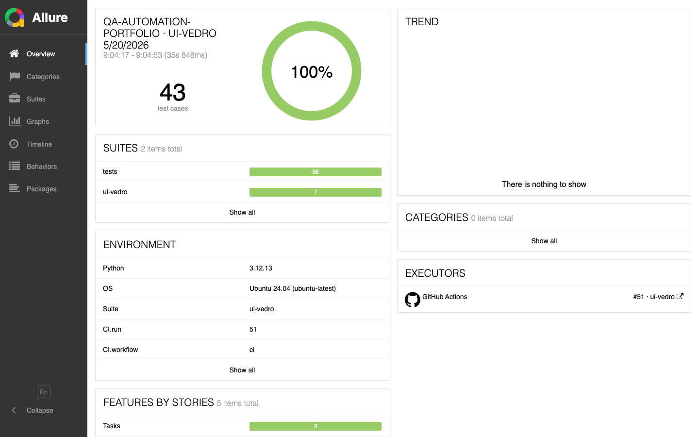

One SPA tested two different ways — a classic pytest + Page Object Model suite for the 80%, and a vedro + d42 + Webbricks-style suite for the deep end. Plus a REST API suite running against a real FastAPI service. Same Allure dashboard.
Classic Page Object Model with function-scope fixtures, per-test
page.route() helpers, and dict literals for fake data. The
stack 80% of teams already speak.
BDD-style steps, state-guaranteed contexts, typed
MockedRoute with strict count checks, d42 schemas with
source-cited bounds. Earns its weight at 1000+ tests.
Facade over per-domain API clients, session/class/function fixture scopes, real JWT against a real FastAPI service. Every request becomes an Allure step with body attached.
ui-pytest and
ui-vedro.
loadTasks is wrapped in a 300 ms debounce. Five
keystrokes in 200 ms — the counter goes ×0 → ×1. Anything
else fails the test with the exact URLs the mock saw.
tests/test_search.py
classic POM
class TestSearch:
@pytest.mark.smoke
def test_debounce(self, board):
matching = fake_task(title="Alpha launch retrospective")
mock = mock_tasks_list(
board.page, {"data": [matching], "total": 1}
)
board.open()
board.wait_until_ready()
mock.requests.clear()
board.search("alpha", delay_ms=30)
board.page.wait_for_timeout(600)
assert len(mock.requests) == 1
assert mock.requests[0].query == {"q": "alpha"}scenarios/board/search_input_debounces.py
vedro + d42
@allure_labels(
Feature.Search, Story.Search,
Priority.Critical, AllureID("B-301"),
)
class Scenario(vedro.Scenario):
subject = "Search input debounces keystrokes..."
async def given_matching_task(self):
self.matching_id = fake(ValidIDSchema)
self.search_response = {"data": [fake(
TaskSchema % {"id": self.matching_id})], "total": 1}
async def when_user_types(self):
async with mocked_tasks_list(
self.page, self.search_response,
wait_for_requests=None,
) as self.mock:
await self.board.header.search_input.type(
"alpha", delay_ms=40)
await self.board.task_list.get_list_task_by_id(
self.matching_id).wait_for()
async def then_exactly_one_call(self):
assert len(self.mock.history) == 1Same product, same assertion. Pytest reads as test logic; vedro reads as a scenario contract with typed labels and a TMS id per row. Pick the one your team will maintain at 3 a.m.

Risk-storming of the product, ranked by business value, with P1/P2/P3 coverage priority. The answer to "how would you approach testing a new project?" — written down, not improvised.
Structured to ISO/IEC/IEEE 29119-3 — scope, approach, environment, entry/exit criteria, schedule — plus DORA delivery metrics tying the suite to deployment health.
Every requirement traced requirement → risk → test → defect
by AllureID. P1 risks covered 100%; the one real coverage gap is
registered, not hidden.
If it runs manually,
it won't for long.